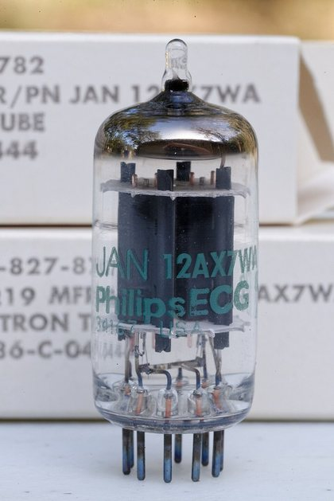
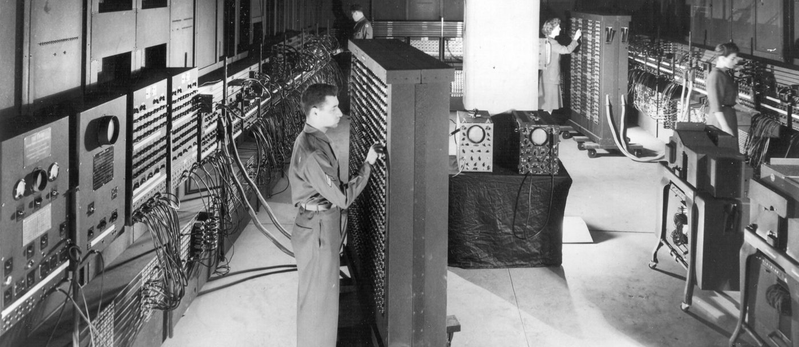
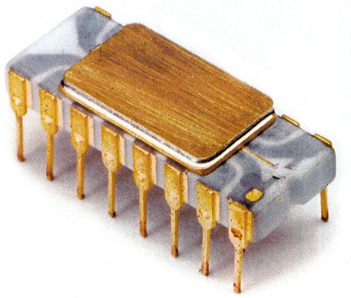

تطور تكنولوجيا المعلومات والتحول الاجتماعي
أهلًا بيك — أول درس معانا
تخيل نفسك رجعت تلاتين سنة لورا…
الإنترنت مش بالشكل اللي تعرفه دلوقتي، والموبايل مش في إيد كل واحد، وخدمات زي التعلم أونلاين، والتسوق الإلكتروني، والدفع من غير كاش ما كانتش منتشرة أو متاحة بالصورة اللي نعرفها النهارده.
طب إزاي وصلنا من الحواسيب الضخمة اللي كانت بتملأ غرفة، لحد موبايل في إيدك يوصلك بالعالم كله؟
في الدرس ده هنمشي في رحلة تطور تكنولوجيا المعلومات:
من الحواسيب الإلكترونية الأولى والصمامات المفرغة ← للحاسب الشخصي ← للإنترنت والويب ← للهواتف الذكية ← للحوسبة السحابية والتقنيات الحديثة.
وفي كل مرحلة هنشوف حاجة مهمة:
التكنولوجيا ما غيرتش الأجهزة بس… دي غيرت طريقة تواصل الناس، وشغلهم، وتعلمهم، وتسوقهم، ودفعهم.
أهداف التعلم
1مراحل التطوّر الخمس
- الأربعينيات–الستينيات: حواسيب إلكترونية
- السبعينيات–الثمانينيات: حواسب شخصية
- التسعينيات: الإنترنت التجاري والويب
- العقد الأول من الألفية: الهواتف الذكية
- من العقد الثاني فصاعدًا: الحوسبة السحابية
2قانون مور
- عدد الترانزستورات في الدوائر المتكاملة يتضاعف تقريبًا كل عامين.
- اتجاه تاريخي، لا قانون فيزيائي ثابت.
- تحديات: تيارات التسرّب والنفق الكمومي.
- بدائل: تعدّد الأنوية والمعالجة المتوازية.
المعلومات والتحوّل
الاجتماعي
3خمسة تغيّرات اجتماعية
- شبكات التواصل الاجتماعي
- التجارة الإلكترونية
- العمل عن بُعد
- التعلّم عبر الإنترنت
- الدفع غير النقدي
4تقنيات ناشئة بارزة
- القيادة الذاتية (+ الحوسبة الطرفية)
- الواقع المعزّز: يضيف عناصر رقمية للواقع
- الواقع الافتراضي: بيئة افتراضية كاملة
- الحوسبة الكمومية والكيوبت
قبل أي حاجة: «تكنولوجيا المعلومات» دي إيه أصلًا؟للفهم
الكتاب هيبدأ يحكيلك تاريخها على طول — فخلّينا نتفق الأول هي إيه، عشان التاريخ يبقى ليه معنى. أي حاجة بتعملها بمعلومة، بتعملها بواحد من خمسة أفعال بس: تجمعها · تخزّنها · تعالجها · تنقلها · تعرضها. وتكنولوجيا المعلومات (IT) هي كل الأجهزة والبرامج والشبكات اللي بتأدّي الأفعال دي إلكترونيًا.
1· المفتاح الصغير اللي كل حاجة مبنية عليهللفهم
الدوائر الرقمية بتمثّل البيانات باستخدام حالتين بنرمز لهما بـ0 و1. وللتبسيط، نقدر نتخيّل الترانزستور كأنه مفتاح إلكتروني بيتحكّم في مرور التيار. عشان الجهاز يحسب أي حاجة، لازم يكون عنده مفاتيح زي دي تقدر تفتح وتقفل ملايين المرات في الثانية. وتصغير المفتاح ده ساعد على تطوّر الحواسيب — جنب تطوّر البرمجيات والشبكات ووسائل التخزين، مش لوحده.

1الصمام المفرَّغ
لمبة زجاج مفرَّغة من الهوا، حجمها زي صباعك تقريبًا، بتشتغل كمفتاح. الحاسب الواحد كان محتاج آلاف منها.
2الترانزستور
مفتاح إلكتروني بيعمل نفس شغل الصمام بس من مادة صلبة: أصغر بمراحل، بيسخن أقل، بيستهلك كهربا أقل، وعمره أطول.
3الدائرة المتكاملة (IC)
بدل ما نلحّم ترانزستورات منفصلة بأسلاك، بنطبع ملايين منها على قطعة سيليكون واحدة — دي اللي بنسمّيها الشريحة.
2· تاريخ تكنولوجيا المعلومات (IT)
الأربعينيات–الستينيات
ظهور الحواسيب الإلكترونية (ومنها ENIAC) واستخدام الصمامات المفرغة
استُخدم أساسًا للأغراض العسكرية والحسابات العلمية
السبعينيات–الثمانينيات
انتشار الحواسب الشخصية (PCs)
بداية استخدام الأفراد للحاسب
التسعينيات
إتاحة الإنترنت للاستخدام التجاري؛ ظهور الويب
انتشار الوصول العالمي إلى المعلومات والبريد الإلكتروني
العقد الأول من الألفية
ظهور الهواتف الذكية (آيفون وغيره)
انتشار سريع وواسع للإنترنت عبر الهواتف المحمولة
من العقد الثاني من الألفية فصاعدًا
انتشار الحوسبة السحابية
تحليل البيانات الضخمة والذكاء الاصطناعي؛ انتشار تقديم موارد تكنولوجيا المعلومات في صورة خدمات عبر الإنترنت
1المرحلة الأولى: الحواسيب الإلكترونية الأولىالأربعينيات – الستينيات
ظهر في هذه المرحلة الحاسب الإلكتروني مثل ENIAC، واعتمدت الحواسيب على الصمامات المفرغة، وكان استخدامها أساسًا للأغراض العسكرية والحسابات العلمية.
للفهم — لماذا لم تكن في البيوت؟

2المرحلة الثانية: الحواسيب الشخصيةالسبعينيات – الثمانينيات
انتشرت في هذه المرحلة الحواسب الشخصية (PCs)، وبدأ الأفراد يستخدمون الحاسب بعد أن كان مقصورًا على المؤسسات الكبيرة.
طب إيه اللي ساعد على ده؟
من أهم التطورات اللي مهّدت لانتشار الحواسب الشخصية — الكمبيوتر نزل من المؤسسات ودخل البيوت.

3المرحلة الثالثة: الإنترنت والويبالتسعينيات
أُتيح الإنترنت في هذه المرحلة للاستخدام التجاري وظهر الويب، فانتشر الوصول العالمي إلى المعلومات والبريد الإلكتروني.
إيه اللي اتغيّر فعليًا؟
بدل ما إنت تتحرك بالملف، البيانات نفسها بقت تقدر تتحرك عبر الشبكة.
طب إيه الجديد في التسعينيات؟
الشبكات ونقل الملفات كانوا موجودين قبلها — الجديد حاجتين:
1الإنترنت بقى متاح للاستخدام التجاري
2ظهور الويب
الويب خلّى الوصول للمعلومات أسهل وأكتر انتشارًا بين الناس — بدل ما تحفظ أوامر، بقيت تدوس على كلمة توصّلك للصفحة.
متلخبطش: الإنترنت ≠ الويب. الإنترنت هو البنية التحتية اللي بتربط الأجهزة والشبكات ببعضها — الكابلات اللي تحت الأرض وتحت البحر، والأجهزة، والقواعد اللي بتخلّي أي جهازين في الدنيا يبعتوا لبعض بيانات. أما الويب فهو خدمة واحدة من كذا خدمة شغّالة فوقه، بتتكوّن من صفحات ومواقع مترابطة. يعني الإنترنت هو الطريق، والويب عربية ماشية عليه — والإيميل عربية تانية على نفس الطريق. عشان كده الكتاب ذكر الاتنين مع بعض في سطر واحد: دول مش اسمين لحاجة واحدة.
4المرحلة الرابعة: الهواتف الذكيةالعقد الأول من الألفية
ظهرت في هذه المرحلة الهواتف الذكية (آيفون وغيره)، فانتشر الإنترنت بسرعة وعلى نطاق واسع عبر الهواتف المحمولة.
طب إيه اللي اتغيّر لما الاتصال بقى معاك طول الوقت؟
انتشرت خدمات جديدة بقوة، وبقت خدمات موجودة أصلًا أسهل وأكتر عملية.
لازم تكون قدام جهاز ثابت.
الاتصال والخدمات بقوا معاك أثناء الحركة.
5المرحلة الخامسة: الحوسبة السحابيةمن العقد الثاني من الألفية فصاعدًا
انتشرت في هذه المرحلة الحوسبة السحابية، وأصبحت موارد تكنولوجيا المعلومات تُقدَّم في صورة خدمات عبر الإنترنت، مع انتشار تحليل البيانات الضخمة والذكاء الاصطناعي.
تمتلك وتشغّل… ولا تستخدم كخدمة؟
المؤسسة تمتلك وتشغّل كل موارد الحوسبة والتخزين بنفسها.
تستخدم موارد مقدَّمة لها كخدمة عبر الإنترنت، وتزوّدها أو تقلّلها حسب احتياجها — زي عدّاد الكهربا.
توافر كميات ضخمة من البيانات مع قدرة حوسبة كبيرة كان من العوامل المهمة اللي ساعدت على انتشار تطبيقات الذكاء الاصطناعي — علمًا إن بعض التطبيقات هي اللي بتحتاج الموارد دي، مش كلها.
3· قانون مور
قانون مور (Moore’s Law)؟لماذا كان مهمًا؟
لكن استمرار تصغير مكوّنات الدوائر يواجه تحديات هندسية وفيزيائية، منها ازدياد تيارات التسرب وتأثيرات كمومية مثل النفق الكمومي. لذلك يعتمد تحسين الأداء أيضًا على تعدد الأنوية والمعالجة المتوازية وتصميمات متخصصة.
لكن ظهرت تحديات
عند تصغير المكوّنات جدًا قد يتسرّب جزء من التيار حتى عند عدم الرغبة في مروره.
عندما تصبح المكوّنات شديدة الصغر قد تظهر تأثيرات كمّية تسمح باحتمال عبور الإلكترون للحاجز.
إذن كيف يتحسّن الأداء اليوم؟
لذلك لا يعتمد تحسين الأداء اليوم على التصغير وحده، بل أيضًا على هذه الأساليب.
4· التغيرات الاجتماعية الناتجة عن تكنولوجيا المعلومات
1شبكات التواصل الاجتماعيSNSمواقع التواصل الاجتماعي · المشاركة الاجتماعية
منصات تتيح للمستخدمين التواصل ونشر المحتوى ومشاركته بسرعة.
2التجارة الإلكترونيةE-commerceالتسوق عبر الإنترنت
بيع السلع والخدمات وشراؤها عبر الإنترنت.
مثال: متاجر إلكترونية مثل أمازون وإيباي.
3العمل عن بُعدRemote Workالعمل من المنزل
نمط عمل يؤدي فيه الشخص مهامه من المنزل أو من موقع آخر بعيد باستخدام الإنترنت.
4التعلّم عبر الإنترنتOnline Learningالدراسة في أي مكان
نمط تعليمي تُقدَّم فيه الدروس والمواد التعليمية عبر الإنترنت.
5الدفع غير النقديCashless Paymentالدفع بدون نقد · الدفع بلمسة واحدة
دفع قيمة السلع أو الخدمات بوسائل غير نقدية، مثل البطاقات المصرفية أو تطبيقات الهاتف أو رموز QR.
5· تقنيات ناشئة بارزة
القيادة الذاتية
تقنية تستخدم الذكاء الاصطناعي للمساعدة على قيادة المركبة.
الواقع المعزز
AR – Augmented Realityتقنية تضيف عناصر أو معلومات رقمية إلى مشهد من العالم الحقيقي.
الواقع الافتراضي
VR – Virtual Realityتقنية تضع المستخدم داخل بيئة افتراضية مولَّدة حاسوبيًا.
الحوسبة الكمومية
Quantum Computingنهج حوسبي يستخدم خصائص ميكانيكا الكم لمعالجة المعلومات، وقد يوفر تفوقًا في فئات محددة من المسائل، لكنه لا يسرّع جميع أنواع الحسابات.
القيادة الذاتية — والحوسبة الطرفية
للفهمالكتاب بيرتّب الفكرة هنا في خطوات مترابطة، فامشي عليها بالترتيب وهتلاقي الحتة أوضح.
إيه هي القيادة الذاتية؟
تقنية تستخدم الذكاء الاصطناعي للمساعدة على قيادة المركبة، ويتفاوت مقدار التدخل البشري بحسب مستوى الأتمتة.
للفهمببساطة خلّي بالك من كلمتين: الكتاب قال «للمساعدة على» مش «تقود بدل السائق»، وقال إن التدخّل البشري بيتفاوت مش ثابت. الاتنين دول بيتحوّلوا لأسئلة صح وخطأ.
بتشتغل إزاي؟
تستخدم المركبة كاميرات ومستشعرات لإدراك محيطها، ثم يعالج النظام البيانات لاتخاذ قرارات القيادة والتحكم فيها.
للفهمببساطة المستشعر جهاز صغيّر بيقيس حاجة في الواقع — مسافة، سرعة، حرارة — ويحوّلها لـأرقام. فالعربية مش «شايفة» بمعنى إنها بتتفرّج؛ هي بتستقبل أرقام كل جزء من الثانية والنظام بيقرأها وياخد قرار: تفرمل · تلفّ · تكمّل.
فين المشكلة؟
ولأن التأخير في معالجة بيانات القيادة قد يؤثر في السلامة، تُعالج بعض البيانات محليًا بالحوسبة الطرفية لتقليل زمن الاستجابة.
يعني إيه الحوسبة الطرفية؟
الحوسبة الطرفية – معالجة البيانات على الجهاز نفسه، فورًا، بدلًا من إرسالها إلى السحابة.
للفهمببساطة كلمة «الطرف» هنا معناها طرف الشبكة — يعني عندك إنت، في العربية نفسها، مش في مركز بيانات بعيد.
ليه لازم حوسبة طرفية في القيادة الذاتية بالذات؟
للفهممثال افتراضي للتوضيح: لو افترضنا إن الرد من السحابة اتأخّر نص ثانية والعربية ماشية 100 كم/ساعة، تبقى مشيت حوالي 14 متر قبل ما القرار يوصلها — وده ممكن يكون الفرق بين إنها تقف وإنها تخبط. الرسمة اللي تحت بتلخّص خطوات الاستشعار والمعالجة واتخاذ القرار.
1استشعار البيئة
كاميرات ومستشعرات تجمع بيانات عن الطريق والمحيط.
2معالجة محلية
تُعالَج البيانات على متن المركبة.
3اتخاذ القرار
القرار بيتنفّذ فورًا.
معالجة البيانات قريبًا من مصدرها وعلى المركبة نفسها، مما يقلل زمن الاستجابة.
إرسال البيانات إلى السحابة واستقبال الرد قد يضيف تأخيرًا، لذلك لا تعتمد المركبة على السحابة وحدها في القرارات الحرجة.
الواقع المعزز والواقع الافتراضي
تقنية تضيف عناصر أو معلومات رقمية إلى مشهد من العالم الحقيقي.
تقنية تضع المستخدم داخل بيئة افتراضية مولَّدة حاسوبيًا.
الحوسبة الكمومية — الفرق بين البت والكيوبت (Qubit)
للفهمتخيّل عملة معدنية واقعة على الطاولة: يا صورة (1) يا كتابة (0) — ومستحيل الاتنين مع بعض.
للفهمالكيوبت ممكن يبقى في حالة تراكب مرتبطة بـ0 و1 مع بعض. وأول ما نقيسه بتطلع نتيجة واحدة بس: 0 أو 1، باحتمالات بتحدّدها حالته. ودي حالة كمومية فعلية — مش مجرد إننا مش عارفين النتيجة المخبّأة. ده اللي بيسمّوه التراكب الكمومي.
بفضل خاصية التراكب الكمي (Superposition)، يمكن للكيوبتات أن تمثّل عددًا هائلًا من الحالات في نفس الوقت، وهو ما يسمح بإجراء معالجة متوازية ضخمة لحل مسائل معينة بسرعة أكبر.
طب التراكب ده بيفيد في إيه؟ في خوارزميات كمومية معيّنة بتستغلّ خصائص زي التراكب والتداخل عشان تحلّ فئات محدّدة من المسائل — زي البحث جوّه احتمالات هائلة أو محاكاة الجزيئات. بس خلّي بالك: التراكب مش معناه إننا نقدر نقرا كل الإجابات الممكنة مرة واحدة. في جمع فاتورة أو تشغيل فيديو مش هتفرق معاك في حاجة.
خلّي بالك في الامتحان: «الحوسبة الكمومية تسرّع جميع أنواع الحسابات» عبارة خاطئة.
الواقع المعزّز AR
تشبيه للفهمزي طبقة شفّافة اتحطّت فوق الشارع — الشارع زي ما هو، والتكنولوجيا بترسم عليه.
الواقع الافتراضي VR
تشبيه للفهمزي باب بينقلك أوضة تانية — الشارع اتشال من قدّامك، وإنت جوّه عالم مبني بالحاسب.
الحوسبة الكمومية Quantum Computing
تشبيه للفهمزي عملة بتلفّ — مش مستقرّة على وش وهي بتحسب.
في كل مرحلة أضافت تكنولوجيا المعلومات جهازًا جديدًا، وغيّرت معه طريقة تواصل المجتمع وعمله وتجارته.
سؤال على نمط الامتحان — إجابة نموذجية
نموذج إجابة مقترح لسؤال الـ6 درجاتللفهم
- نقطة التحوّل: قبل السحابة كانت المؤسسة لازم تمتلك أجهزتها وتشغّلها بنفسها؛ ومع انتشار الحوسبة السحابية بقت موارد تكنولوجيا المعلومات تُقدَّم في صورة خدمات عبر الإنترنت — وده معنى «تكنولوجيا المعلومات كخدمة».
- الأثر على البيانات: إتاحة قدرة تخزين ومعالجة كبيرة خلّت تحليل البيانات الضخمة ممكنًا عمليًا لجهات ما كانتش تقدر عليه قبل كده.
- الأثر على الذكاء الاصطناعي: بعض تطبيقاته بتحتاج بيانات كتيرة وحوسبة كبيرة؛ والسحابة سهّلت إتاحة الموارد دي، فانتشرت التطبيقات دي معاها.
- النتيجة المجتمعية: خدمات رقمية كتير بقت جزء من الحياة اليومية — وظهرت في المقابل تحديات جديدة تتعلق بالأمان والإنصاف وإتاحة الوصول.
إجابة السؤال الرئيسي
مصطلحات أساسية
الخلاصة في دقيقة
تذكّر: تطورت تكنولوجيا المعلومات عبر مراحل – الحواسب، والإنترنت، والهواتف الذكية، والحوسبة السحابية. وفي كل مرحلة أضافت جهازًا جديدًا، وغيّرت معه طريقة تواصل المجتمع وعمله وتعلمه وسداده لمدفوعاته.
- خمس مراحل: حاسب ← حاسب شخصي ← إنترنت وويب ← هاتف ذكي ← سحابة. الأجهزة بتصغر وتترابط أكتر.
- خمسة تغيّرات اجتماعية: تواصل · تجارة إلكترونية · عمل عن بُعد · تعلّم أونلاين · دفع غير نقدي.
- الخلاصة: تأثير كل مرحلة ما كانش مقتصر على ظهور جهاز جديد؛ امتدّ كمان لطريقة التواصل والعمل والتعلّم والدفع، وجاب معاه تحديات في الأمان والإنصاف وإتاحة الوصول.
- قانون مور: عدد الترانزستورات في الدوائر المتكاملة يتضاعف تقريبًا كل عامين — اتجاه تاريخي مش قانون فيزيائي ثابت، وبيواجه تحديات (تسرّب + نفق كمومي).
- أربع تقنيات ناشئة: قيادة ذاتية (بالحوسبة الطرفية) · AR · VR · حوسبة كمومية (قد تفيد في فئات محددة من المسائل).
اتأكد إنك قادر على
- أقدر أرتّب المراحل الخمس بالترتيب الزمني الصحيح.
- أقدر أذكر التحدّيين اللي بيواجهوا استمرار التصغير.
- أفرّق بين الواقع المعزّز والافتراضي في جملة واحدة.
- أعرف تعريف قانون مور بنصّه، وليه هو ملاحظة مش قانون فيزيائي.
- أعرف الخمس تغيّرات الاجتماعية وأصنّف أي مثال تحت واحد منهم.
- أعرف ليه القيادة الذاتية محتاجة حوسبة طرفية، وأشرحها في جملتين.
لخّص الدرس بأسلوبك
تطور تكنولوجيا المعلومات والتحول الاجتماعي
أسئلة الكتاب16
01 · المثال المحلول — الجزء الأول
من بين الخيارات التالية (أ - د)، اختر الخيار الذي يُرتِّب مراحل تطور تكنولوجيا المعلومات (IT) بالترتيب الزمني الصحيح.
- أبداية ظهور الحاسب ← ظهور الهواتف الذكية ← تسويق الإنترنت تجاريًا ← انتشار الحوسبة السحابية
- ببداية ظهور الحاسب ← تسويق الإنترنت تجاريًا ← ظهور الهواتف الذكية ← انتشار الحوسبة السحابية
- جتسويق الإنترنت تجاريًا ← بداية ظهور الحاسب ← انتشار الحوسبة السحابية ← ظهور الهواتف الذكية
- دظهور الهواتف الذكية ← تسويق الإنترنت تجاريًا ← ظهور الحاسب ← انتشار الحوسبة السحابية
02 · المثال المحلول — الجزء الثاني
ضع أمام كل عبارة (أ - د) علامة ○ إذا كانت صحيحة أو × إذا كانت خاطئة.
- أقانون مور هو الملاحظة التجريبية القائلة إن "عدد الترانزستورات في الدائرة المتكاملة يتضاعف تقريبًا كل عامين."( )
- بيواجه استمرار تصغير مكوّنات الدوائر تحديات هندسية وفيزيائية تُبطئ الاتجاه الذي وصفه قانون مور.( )
- جشبكات التواصل الاجتماعي فعّالة جدًا في نشر المعلومات بسرعة.( )
- دالتجارة الإلكترونية تعني شراء السلع من المتاجر الفعلية باستخدام النقد.( )
03 · المثال المحلول — الجزء الثالث
طابق كل وصف (1 - 3) مع التقنية الأنسب من الخيارات أدناه (أ - ج).
الأوصاف
- تقنية تُضيف معلومات رقمية فوق صور من العالم الحقيقي
- تقنية تستخدم الذكاء الاصطناعي لقيادة مركبة بأقل تدخل بشري بحسب مستوى الأتمتة
- تقنية تتيح للمستخدمين الانغماس في فضاء افتراضي يولّده الحاسب
الخيارات
- أالقيادة الذاتية
- بالواقع المعزز
- جالواقع الافتراضي
✓ الحل — المثال المحلول
04 · تدرّب — أجب عن الأسئلة التالية
ما اسم الملاحظة التجريبية القائلة إن "عدد الترانزستورات في الدائرة المتكاملة يتضاعف تقريبًا كل عامين"؟
ما المصطلح الذي يشير إلى بيع السلع والخدمات وشرائها عبر الإنترنت؟
ما المصطلح الذي يصف أداء الشخص عمله من المنزل أو من موقع بعيد عبر الإنترنت؟
ما المصطلح الذي يشير إلى نظام إجراء المدفوعات بالنقود الإلكترونية ورموز QR وغيرها، دون استخدام النقد؟
ما المصطلح الذي يشير إلى التقنية التي تستخدم الذكاء الاصطناعي لقيادة مركبة بأقل تدخل بشري بحسب مستوى الأتمتة؟
05 · تدرّب — تصنيف واختيار
صنّف كل مثال من (1 - 4) ضمن الفئة الأنسب: أ تغيرات في الحياة اليومية، ب تغيرات في الصناعة والاقتصاد، ج تغيرات في الرعاية الصحية والتعليم. ثم فسّر اختيارًا واحدًا.
- 1شراء منتجات عبر التسوق الإلكتروني.
- 2الدفع مقابل المشتريات بتطبيق دفع على الهاتف الذكي.
- 3مشاركة الصور مع الأصدقاء على شبكات التواصل الاجتماعي.
- 4شركة تُطبّق نظام العمل من المنزل.
من بين الخيارات التالية (أ - د)، اختر الخيار الذي لا يُعد وصفًا مناسبًا لتقنية ناشئة.
- أالقيادة الذاتية تستخدم الذكاء الاصطناعي للمساعدة على قيادة المركبة، ويتفاوت مقدار التدخل البشري بحسب مستوى الأتمتة.
- بالواقع المعزز تقنية تُضيف معلومات رقمية فوق صور من العالم الحقيقي.
- جالواقع الافتراضي تقنية تُحسّن بشكل كبير سرعة معالجة الحاسب.
- ديُتوقع أن تسرّع الحوسبة الكمومية الحسابات الصعبة على الحواسب التقليدية.
06 · سؤال على نمط الامتحان[6 درجات]تقييمات
حلّل كيف غيّر انتشار الحوسبة السحابية (من العقد الثاني من الألفية فصاعدًا) طريقة استخدام تكنولوجيا المعلومات.
07 · تمارين — اقرأ الفقرة التالية وأجب عن كل سؤال
ظهرت الحواسيب الإلكترونية في أربعينيات القرن العشرين، واستُخدمت أولًا في أغراض عسكرية وحسابات علمية. ثم انتشرت (1) في السبعينيات والثمانينيات، فبدأ استخدامها على نطاق أوسع بين الأفراد. وفي التسعينيات أُتيح (2) للاستخدام التجاري وانتشر الويب، فتوسع الوصول العالمي إلى المعلومات. وفي العقد الأول من الألفية ظهرت (3) ، فانتشر الإنترنت عبر الهواتف المحمولة بسرعة.
املأ الفراغات (1 - 3).
ما التقنية التي انتشرت من العقد الثاني من الألفية فصاعدًا، والتي تدعم تحليل البيانات الضخمة واستخدام الذكاء الاصطناعي؟
ما اسم الملاحظة التجريبية القائلة إن "عدد الترانزستورات في الدائرة المتكاملة يتضاعف تقريبًا كل عامين"؟
08 · تمارين — اختيار
من بين الخيارات التالية (أ - و)، اختر كل ما يُعد من التقنيات الناشئة.
- أالبريد الإلكتروني
- بالقيادة الذاتية
- جالحواسب الشخصية
- دالواقع المعزز
- هـالواقع الافتراضي
- والحوسبة الكمومية
من بين الخيارات التالية (أ - د)، اختر الخيار الذي يصف بشكل أنسب خصائص شبكات التواصل الاجتماعي.
- أخدمة تتيح للمستخدمين التواصل فيما بينهم ونشر المعلومات ومشاركتها، وهي فعّالة جدًا في نشر المعلومات بسرعة.
- بخدمة لبيع السلع والخدمات وشرائها عبر الإنترنت.
- جأسلوب يعمل فيه الشخص من المنزل أو من مواقع بعيدة أخرى.
- دنظام لإجراء المدفوعات بالنقود الإلكترونية أو رموز QR دون استخدام النقد.
اختر الإجابة الصحيحة16
أي من الخيارات التالية يمثّل التقنية أو الحدث الرئيسي المرتبط بفترة السبعينيات والثمانينيات من القرن الماضي؟
- أظهور الهواتف الذكية
- بإتاحة الإنترنت للاستخدام التجاري وظهور الويب
- جانتشار الحوسبة السحابية
- دانتشار الحواسيب الشخصية (PCs)
أي الملاحظات الآتية تصف بدقة ما يفعله «قانون مور»؟
- أتضاعف عدد الترانزستورات في الدائرة المتكاملة تقريبًا كل عامين
- بثبات عدد الترانزستورات وعدم تغيرها عبر الزمن نهائيًا
- جزيادة استهلاك الطاقة في الحواسيب التقليدية بمقدار الضعف سنويًا
- دانخفاض قدرات الحوسبة ومعالجة البيانات مع مرور السنوات
ما المصطلح الذي يشير إلى نمط عمل يؤدي فيه الشخص مهامه من المنزل أو من موقع آخر بعيد باستخدام الإنترنت؟
- أالتعلم عبر الإنترنت
- بالتجارة الإلكترونية
- جالدفع غير النقدي
- دالعمل عن بعد (Remote Work)
ما المقصود بخدمة «شبكات التواصل الاجتماعي (SNS)»؟
- أدفع قيمة السلع أو الخدمات بوسائل غير نقدية
- ببيع السلع والخدمات وشراؤها عبر الإنترنت
- جمنصات تتيح للمستخدمين التواصل ونشر المحتوى ومشاركته بسرعة
- دنمط تعليمي تُقدَّم فيه الدروس عبر الإنترنت
ما التقنية التي تقضي بمعالجة البيانات على الجهاز نفسه فورًا بدلًا من إرسالها إلى السحابة، لتجنّب التأخير في اتخاذ القرار؟
- أالحوسبة السحابية
- بالحوسبة الكمومية
- جالحوسبة الطرفية
- دشبكات التواصل الاجتماعي
أي من الخيارات الآتية يمثّل المفهوم الدقيق لتقنية «الواقع المعزز (AR)»؟
- أتقنية تضع المستخدم داخل بيئة افتراضية مولدة حاسوبيًا بالكامل
- بتقنية تضيف عناصر أو معلومات رقمية إلى مشهد من العالم الحقيقي
- جنهج حوسبي يستخدم خصائص ميكانيكا الكم لمعالجة المعلومات
- دنظام لإجراء المدفوعات بالنقود الإلكترونية ورموز QR
ما الذي يميّز «الكيوبت (qubit)» عن «البت الكلاسيكي» في الحوسبة الكمومية؟
- أيحمل حالة محددة واحدة إما 0 أو 1 في كل وقت
- بيقتصر استخدامه حصريًا على الحسابات البسيطة
- جيعتمد فقط على الدوائر المتكاملة التقليدية وثبات التيار الكهربائي
- ديستخدم مبدأ التراكب الكمي ليكون مزيجًا من 0 و1 في نفس الوقت
ما المقصود بمصطلح «الدفع غير النقدي (Cashless Payment)»؟
- أدفع قيمة السلع أو الخدمات بوسائل غير نقدية مثل البطاقات أو تطبيقات الهاتف أو رموز QR
- ببيع السلع والخدمات وشراؤها عبر المتاجر الفعلية باستخدام النقد الورقي
- جالعمل من المنزل باستخدام الإنترنت والبريد الإلكتروني
- دتقديم الدروس والمواد التعليمية عبر الإنترنت للمستخدمين
في أي فترة زمنية أُتيح الإنترنت للاستخدام التجاري وظهر الويب، فتوسّع معه الوصول العالمي إلى المعلومات؟
- أالأربعينيات والستينيات
- بالسبعينيات والثمانينيات
- جالتسعينيات
- دمن العقد الثاني من الألفية فصاعدًا
ما التقنية التي تستخدم الذكاء الاصطناعي للمساعدة على قيادة المركبة باستخدام الكاميرات والمستشعرات لإدراك المحيط واتخاذ القرار؟
- أالحوسبة السحابية
- بالقيادة الذاتية
- جالواقع الافتراضي
- دالحوسبة الكمومية
ما المصطلح الذي يعبّر عن تكنولوجيا المعلومات المقدَّمة كخدمة عبر الإنترنت لدعم تحليل البيانات الضخمة والذكاء الاصطناعي؟
- أالبت الكلاسيكي
- بالحوسبة الطرفية
- جالحوسبة السحابية
- دالتراكب الكمي
أي من الآتي يُعد الوصف الصحيح لمفهوم «الواقع الافتراضي (VR)»؟
- أتقنية تضيف معلومات رقمية فوق صور من العالم الحقيقي
- بنظام لإجراء المدفوعات بالنقود الإلكترونية ورموز QR
- جتقنية لمعالجة البيانات على الجهاز نفسه فورًا دون السحابة
- دتقنية تضع المستخدم داخل بيئة افتراضية مولدة حاسوبيًا
الفترة الزمنية التي شهدت ظهور الهواتف الذكية وانتشار الإنترنت عبر الهواتف المحمولة بسرعة هي:
- أالعقد الأول من الألفية
- بالسبعينيات والستينيات
- جالتسعينيات
- دالأربعينيات من القرن العشرين
نمط تعليمي وتدريبي تُقدَّم فيه الدروس والمواد التعليمية حصريًا أو جزئيًا عبر شبكة الإنترنت هو:
- أالتعلم عبر الإنترنت (Online Learning)
- بالعمل عن بعد
- جالتجارة الإلكترونية
- دالدفع غير النقدي
بدأت الحواسيب الإلكترونية في الظهور، واستُخدمت أساسًا للأغراض العسكرية والحسابات العلمية مثل حاسوب ENIAC باستخدام الصمامات (المفرغة)، في فترة:
- أالسبعينيات
- بالأربعينيات
- جالتسعينيات
- دالعقد الأول من الألفية
مبدأ أو نهج حوسبي يستخدم خصائص ميكانيكا الكم لمعالجة المعلومات، وقد يوفر تفوقًا في فئات محددة من المسائل، هو:
- أالحوسبة الطرفية
- بالحوسبة الكمومية
- جالدفع غير النقدي
- دشبكات التواصل الاجتماعي
أكمل12
أول الحواسيب الإلكترونية التي ظهرت في الأربعينيات، ومن أشهرها
المفاتيح التي اعتمدت عليها الحواسيب الأولى تُسمّى
تقديم الدروس والمواد التعليمية عبر الإنترنت يُسمّى
دفع قيمة السلع أو الخدمات بوسائل غير نقدية مثل البطاقات المصرفية ورموز QR يُسمّى
المنصات التي تربط المستخدمين لنشر المعلومات ومشاركتها بسرعة هي
تكنولوجيا المعلومات المقدَّمة كخدمة عبر الإنترنت تُسمّى
معالجة البيانات على الجهاز نفسه فورًا بدلًا من إرسالها إلى السحابة تُسمّى
التقنية التي تستخدم الذكاء الاصطناعي للمساعدة على قيادة المركبة هي
التقنية التي تُضيف معلومات رقمية فوق مشهد من العالم الحقيقي هي
التقنية التي تضع المستخدم داخل بيئة افتراضية مولَّدة حاسوبيًا هي
يحمل البت التقليدي حالة واحدة، أما فيستخدم مبدأ
من التحديات الفيزيائية أمام استمرار تصغير المكوّنات: و
صح وخطأ12
- 1قانون مور قانون فيزيائي ثابت لا يتغيّر.( )
- 2استمر اتجاه قانون مور عقودًا، وأسهم في زيادة قدرات الحوسبة وتحسين أداء المعالجات.( )
- 3العمل عن بُعد نمط تعليمي تُقدَّم فيه الدروس والمواد التعليمية عبر الإنترنت.( )
- 4من أمثلة التجارة الإلكترونية متاجر إلكترونية مثل أمازون وإيباي.( )
- 5الحوسبة الكمومية لا تسرّع جميع أنواع الحسابات.( )
- 6الواقع الافتراضي تقنية تضيف عناصر رقمية فوق العالم الحقيقي.( )
- 7تُعالَج بعض بيانات القيادة الذاتية محليًا لتقليل زمن الاستجابة.( )
- 8مقدار التدخّل البشري في القيادة الذاتية ثابت لا يتفاوت.( )
- 9استُخدمت الحواسيب الإلكترونية الأولى أساسًا في التجارة الإلكترونية.( )
- 10أُتيح الإنترنت للاستخدام التجاري في التسعينيات.( )
- 11يعتمد تحسين أداء المعالجات اليوم على التصغير وحده.( )
- 12البت التقليدي يحمل حالة واحدة في اللحظة.( )
تصنيف وقارن5
01 · طابق كل أثر على المجتمع بالفترة الزمنية بتاعته
التأثير على المجتمع
- انتشار الوصول العالمي إلى المعلومات والبريد الإلكتروني
- استُخدم أساسًا للأغراض العسكرية والحسابات العلمية
- تحليل البيانات الضخمة والذكاء الاصطناعي؛ وتقديم موارد تكنولوجيا المعلومات في صورة خدمات عبر الإنترنت
- بداية استخدام الأفراد للحاسب
- انتشار سريع وواسع للإنترنت عبر الهواتف المحمولة
الفترة الزمنية
- أالأربعينيات–الستينيات
- بالسبعينيات–الثمانينيات
- جالتسعينيات
- دالعقد الأول من الألفية
- هـمن العقد الثاني من الألفية فصاعدًا
02 · طابق كل مصطلح بتعريفه
التعريف
- الملاحظة القائلة إن عدد الترانزستورات في الشريحة يتضاعف تقريبًا كل عامين
- معالجة البيانات على الجهاز نفسه، فورًا، بدلًا من إرسالها إلى السحابة
- تكنولوجيا المعلومات المقدَّمة كخدمة عبر الإنترنت
- تربط المستخدمين لنشر المعلومات ومشاركتها
- الدفع دون استخدام النقد (نقود إلكترونية، رموز QR)
المصطلح
- أالدفع غير النقدي
- بالحوسبة الطرفية
- جشبكات التواصل الاجتماعي
- دالحوسبة السحابية
- هـقانون مور
03 · قارن بين الواقع المعزز والواقع الافتراضيتقييمات
| وجه المقارنة | الواقع المعزز (AR) | الواقع الافتراضي (VR) |
|---|---|---|
| التعريف | ||
| طريقة العمل |
04 · قارن بين البت الكلاسيكي والكيوبتتقييمات
| وجه المقارنة | البت الكلاسيكي | الكيوبت (qubit) |
|---|---|---|
| الحالة التي يحملها | ||
| المبدأ الذي يستخدمه |
05 · قارن بين التجارة الإلكترونية والدفع غير النقديتقييمات
| وجه المقارنة | التجارة الإلكترونية | الدفع غير النقدي |
|---|---|---|
| المفهوم | ||
| مثال |
علّل11
لا يُعدّ قانون مور قانونًا فيزيائيًا ثابتًا.
كانت الحواسيب الأولى تشغل غرفة بأكملها.
استُخدمت الحواسيب الإلكترونية الأولى أساسًا في الأغراض العسكرية والحسابات العلمية.
يواجه استمرار تصغير مكوّنات الدوائر تحديات هندسية وفيزيائية.
لم يعد تحسين أداء المعالجات معتمدًا على التصغير وحده.
الحوسبة الكمومية ليست بديلًا عامًا للحواسيب التقليدية.
تُعدّ التسعينيات نقطة تحوّل في تاريخ تكنولوجيا المعلومات.
ارتبط انتشار الذكاء الاصطناعي بانتشار الحوسبة السحابية.
يُعدّ ظهور الهواتف الذكية نقلة في طريقة استخدام الإنترنت.
يرتبط تطور التقنية دائمًا بتغيرات اجتماعية واقتصادية تحتاج إلى فهم وتقييم.
يُصنَّف الدفع برمز QR ضمن الدفع غير النقدي.
01 · طبّق ما تعلمته — قرية اتصلت بالإنترنت
قرية لم يكن فيها اتصال بالإنترنت من قبل، ثم اتصلت بالإنترنت عالي السرعة وأصبحت خدمات الدفع غير النقدي متاحة فيها. توقّع تغييرين قد يطرآن على الحياة اليومية، وحدد تحديًا جديدًا محتملًا، وفسّر إجابتك.
02 · فكّر كمهندس — ابحث ثم قرر
ابدأ من الميزة ومصدر القلق اللذين ذكرتهما في ملاحظة "توقّف وفكّر"، ثم استقصِ أكثر واتخذ قرارك.
(1) اجمع البيانات. اسأل عشرة من زملائك في الصف: هل يدفعون عادةً نقدًا أم بطريقة غير نقدية (بطاقة، أو تطبيق على الهاتف المحمول، أو رمز QR)؟ سجّل النتائج في جدول وحدّد الإجابة الأكثر شيوعًا.
(2) حلّل أصحاب المصلحة. استنادًا إلى نتائج الاستطلاع ورأيك، اذكر لكل مجموعة أدناه فائدة واحدة وتحديًا واحدًا لمجتمع يعتمد بدرجة كبيرة على الدفع غير النقدي.
| المجموعة | الفائدة | العيب |
|---|---|---|
| عميل يدفع | ||
| صاحب متجر صغير | ||
| شخص ليس لديه بطاقة بنكية أو هاتف ذكي |
(3) اتخذ قرارًا. بالاستناد إلى استطلاعك وجدولك، قرِّر: هل ينبغي أن يتجه مجتمعك نحو الدفع غير النقدي؟ أوصِ بخطوة واحدة واذكر سببين.
اشرح تطور تكنولوجيا المعلومات في الفترة الممتدة من الأربعينيات إلى الستينيات، موضحًا استخدامها الأساسي في تلك الفترة.
ما المقصود بمصطلح «التجارة الإلكترونية (E-commerce)»؟ موضحًا ذلك بمثالين.
اشرح «قانون مور» موضحًا ما يصفه، والتحديات الهندسية والفيزيائية التي تواجه استمرار تصغير مكونات الدوائر.
عدّد التحولات المجتمعية الخمسة الناتجة عن تكنولوجيا المعلومات، موضحًا مفهوم كل من «العمل عن بعد» و«التجارة الإلكترونية».
وضّح خصائص واستخدامات التقنيات الناشئة الثلاث البارزة المذكورة في الدرس (القيادة الذاتية، الواقع المعزز/الافتراضي، والحوسبة الكمومية).
اشرح كيف أثّر ظهور الحواسيب الشخصية (PCs) في السبعينيات والثمانينيات، وانتشار الوصول العالمي إلى المعلومات والبريد الإلكتروني في التسعينيات، على المجتمع.
وضّح باختصار مفهوم كل من «شبكات التواصل الاجتماعي (SNS)» و«التعلم عبر الإنترنت» و«الدفع غير النقدي» باعتبارها تحولات مجتمعية.
توقّف وفكّر: من بين هذه التغيرات الخمسة، أيها سيكون الأصعب في التخلي عنه، ولماذا؟
توقّف وفكّر: في القيادة الذاتية، لماذا يكون من الضروري معالجة البيانات فورًا على المركبة نفسها بالحوسبة الطرفية، بدلًا من إرسالها إلى السحابة لاتخاذ القرار؟ اشرح إجابتك.
توقّف وفكّر: ينتشر الدفع غير النقدي في دول كثيرة. فلو تحقّق مجتمع خالٍ تمامًا من النقد، فاختر ميزة واحدة ومصدر قلق واحدًا محتملًا، واشرح باختصار سبب كل منهما.
استكشف (في ثنائيات): مع زميلك، انظرا إلى الفترات الزمنية الخمس في الجدول أدناه قبل أن تكملا القراءة. ولكل فترة، اذكرا جهازًا أو خدمة واحدة من تلك الحقبة ما زلتما تستخدمانها أو تسمعان عنها اليوم. ثم اتفقا على المرحلة التي تعتقدان أنها غيّرت الحياة اليومية أكثر من غيرها، وسجّلا سببًا واحدًا يدعم اختياركما.
فكّر وتحدَّ – تأمّل: أي مرحلة من مراحل تكنولوجيا المعلومات تعتقد أنها ستكون الأهم في السنوات العشر القادمة؟ اذكر سببًا واحدًا. هل كان توقعك في بداية الدرس صحيحًا؟ ما الذي غيّر رأيك؟ · وتحدَّ: اختر تقنية ناشئة واحدة من هذا الدرس (القيادة الذاتية، الواقع المعزز/ الواقع الافتراضي، أو الحوسبة الكمومية). اقترح طريقة واحدة يمكن أن تساعد بها في حل مشكلة حقيقية، واذكر خطرًا واحدًا.
اختبر فهمك: أجب عن أسئلة هذا البنك دون الرجوع إلى الشرح، ثم راجع إجاباتك.